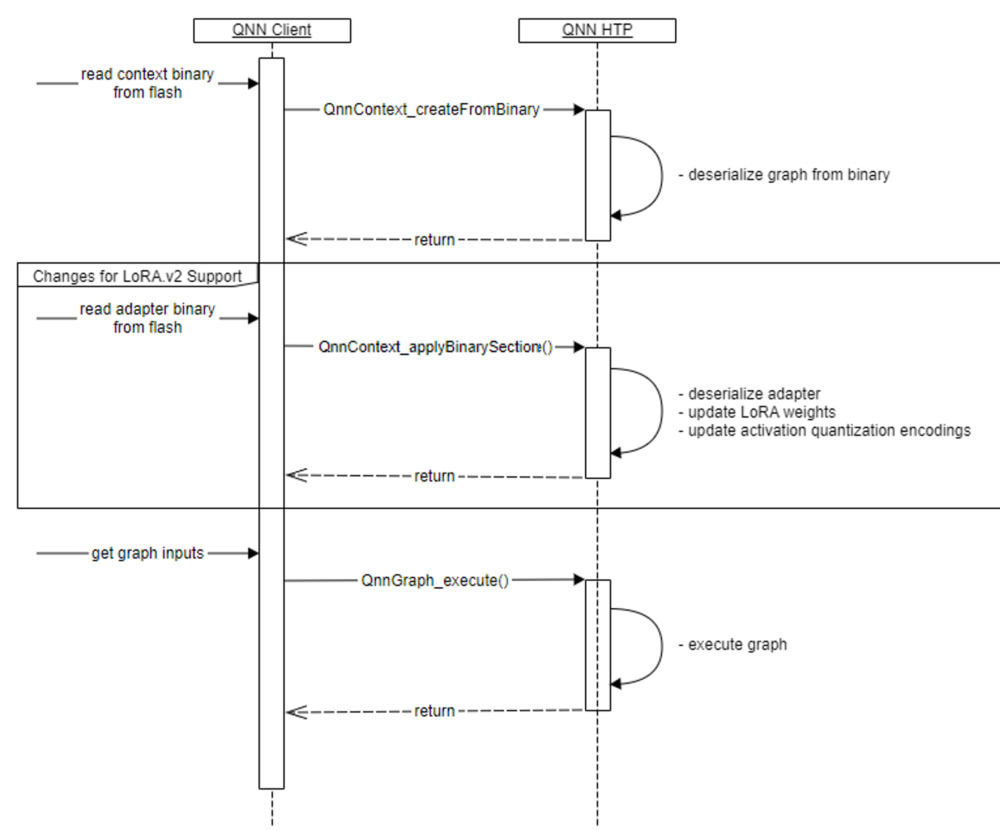

Online Flow : QNN Call Flow¶
At the end of the offline flow, users will have a serialized context binary file (for base model) , and a set of binary section files (for LoRA Adapters)
To apply LoRA Adapter on-target, user needs to use new QNN API:
QnnContext_applyBinarySectionThe on-target flow is as follows
Create Context by calling
QnnContext_createFromBinary(as usual)Apply the adapter by calling
QnnContext_applyBinarySection(new)Update I/O tensors using adapter binary compatible quantization encodings
Get adequately quantized inputs and call
QnnGraph_execute(as always)
Updating quantization encodings of I/O tensors
For quantized models, quantization encodings of input/output tensors can change when LoRA adapter gets applied
Client can retrieve quantization encodings from adapter binary by calling
QnnSystem_getBinaryInfoon it.Client must check/update quantization encodings of I/O tensors after new adapter was applied
Back to running with base graph only (after any adapter is applied)
Option a - Set Alpha to 0
Option b - Create one adapter which has all zero Lora weights. Switch to this adapter. A default adapter is generated from the
qnn-context-binary-generatorwith suffix default_adapter